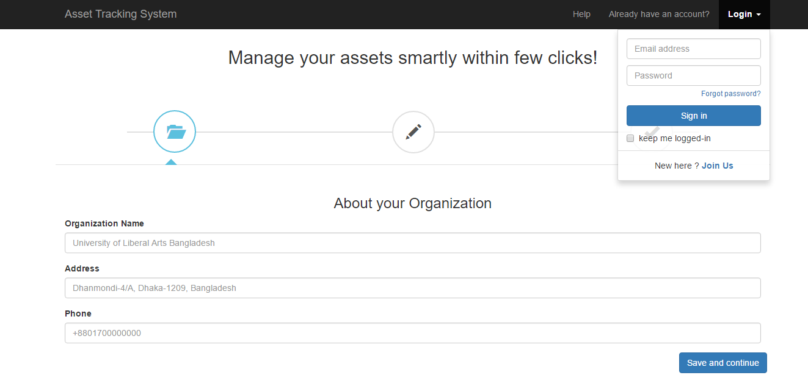
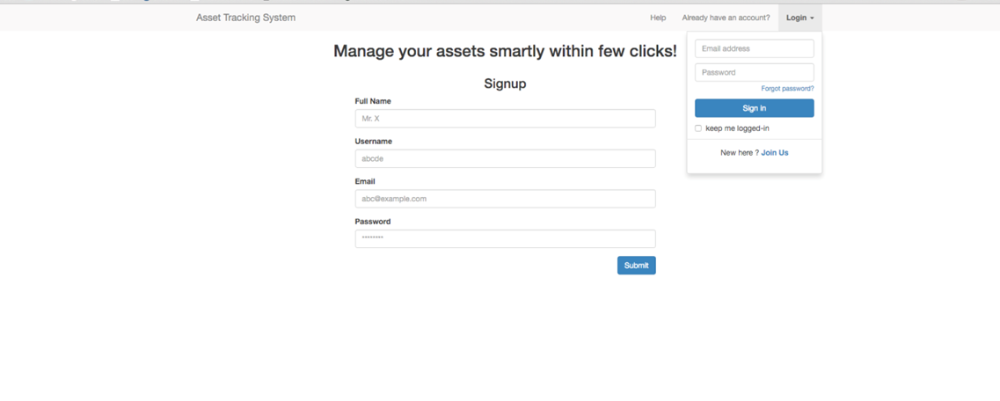
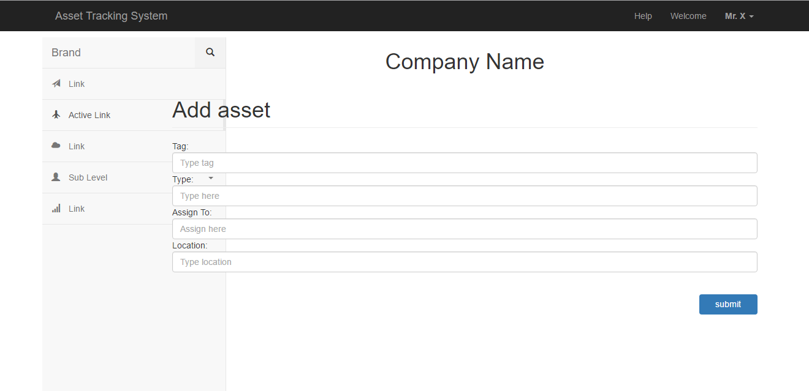

for
Asset Tracking Systems is comprised of web, smartphone and desktop platform service. This application provides tracking assets such as table, chair, computer, tools or other materials by the location of the asset & the person the asset assigned to. And the applications crates history of all the activities done related to asset by a user. More specifically the system keeps records of usage, maintenance, lost, damaged history & the traceable position & person of assets. Using this system at first users add the descriptions of an asset & can see the description of a particular asset and shows all the information’s and movements affecting this asset over time. This software's users are Admin & Managers of an organization/company who will use this service to manage their assets. The application will be built on multiple platforms- Web, Android App, Desktop App. Overall this system provide a perfect solution for companies that need manage their assets smartly.
1. Open Users computer.
2. Firstly users download our Asset Tracking System app.
3. Make sure user’s computer meets the system requirements of the program user attempting to install.
4. Within the MY Computer window, open the drive that contains the installation files.
5. Within the drive that contains our files, locate either the executable setup or install file. Double clicking on this file starts the installation process.
After that user will be able to install the program.
1. Tap the Apps icon in the bottom-right of the home screen.
2. Swipe left and right until user find the Play Store icon.
3. Tap the magnifying glass in the top-right, type in the name of this app and tap the magnifying glass in the bottom right.
After installing the software for Web, Android, Ios and Desktop platform service user can sign in, log out, Add asset, remove asset, Edit asset through using this system. If user forgets the password he can solve this problem to follow this user manual guide. To follow this user manual guide use understand how to Sign in, Log out, Edit Asset, Add Asset, Remove Asset and what to do when he Forget password. User can also be informed about all company information and Asset history through follow this user manual guide.
Tab One
Tab Two
Tab Three
Tab Four
3.1 Desktop
After installing the software in Desktop user can Sign in, Log out, Edit Asset, Remove Asset, Add Asset, Forget password and to keep all Company information and Asset history. For very clear understanding about how user can do this things very easily some guide line is given below-
3.1.1. Sign In
1. If user wants to sign in the page first user will go to the link of the website of navigation bar.
2. After that user has to click on the sign in option
3. Then user will get a new window. Then user has to give username at the place of username and password at the place of password.
4. At last click on the sign in option.
3.1.2.Log out
1. If you want to leave the log in page , then you click on the signup .
2. Here you found log out then you will go to the log in page.
3. If you found any problem then see the screen short.
3.1.3. Add Asset
1.If you want to add asset then you click on to the add asset.
2.Then you found add asset page.
3.What you want to add then add it & save it.
3.1.4.Forget Password
1. If we forget password then click ”forgot password”.
2. Then we will find another page and “send a verification code” via “E-mail”.
3. Open email then copy verification code and paste in “type code”.
4. Now you continue for “log in”.
3.1.5. Remove Asset
1. If we want remove something then click “Delete Button”.
2. Then you select what you want to remove.
3. After selecting you click “yes” that will be removed automatically.
3.1.6. Edit Asset
1. Click the “Edit Button” on asset page.
2. Then find another page and what you want to edit , edit there.
3. After complete editing then click “Save Change”.
4. Then this page come back previous page automatically.
3.1.7. Company Information
Company name : ABC IT LTD
Company email : abcit@gmail.com
Company phone no : 017xx xxxxxx
3.1.8. Asset History
Asset history is one of the most important things. Because it provides the complete and details information of all the changes to the asset registered during the time. The different types of asset action for a large number of assets the asset history allows user to single map any definite performance of work type to a definite field in the history.
3.2 ios
After install the software in ios user can Sign in, Log out, Edit Asset, Remove Asset, Add Asset, Forget password and to keep all Company information and Asset history. For very clear understand How user can do this things very easily some guide line is given below-
3.2.1. Sign in
<<<<<<< HEAD1.If you want to leave the log in page , then you click on the signup . 2. Here you found log out then you will go to the log in page. 3. If you found any problem then see the screen short. >>>>>>> 7002a743cb2a848fe9421bc7fdd6ac8cdb23c6ea =======
1. If user wants to sign in the page first user will go to the link of the website of navigation bar.
2. After that user has to click on the sign in option
3. Then user will get a new window. Then user has to give username at the place of username and password at the place of password .
4. At last click on the sign in option.
>>>>>>> c15b3ef135d76845590f934cc26049934e972f35
3.2.2. Log out
<<<<<<< HEAD1.If you want to leave the log in page , then you click on the signup . 2. Here you found log out then you will go to the log in page. 3. If you found any problem then see the screen short.
3.2.3. Add Asset
1.If you want to add asset then you click on to the add asset.
2.Then you found add asset page.
3.What you want to add then add it & save it.
>>>>>>> c15b3ef135d76845590f934cc26049934e972f35
3.2.4. Forget password
1. If anyone forgets the password then click the “Forgot password” button.
2. Then find another page heading “Having trouble signing in?” have three option like – “I don’t know my password”, “I don’t know my username”,
“I’m having other problem signing”. Choose the appropriate option.
3. When you choose any option it will ask your associated email address with
Your account. Then write down your email address and click continue button.
4. Then we will get a verify code option “send a verify code” via email.
5. Go to the email address copy the verify code and paste it in the type code option.
6. Now you can continue for “log in”.
3.2.5. Remove Asset
1. If anyone wants to delete something click on the “Edit” button select that
You want to remove then click on to the “Delete” button.
2. When you click on the delete button you will get two option “Yes” or “No” if you choose the “yes” button the selecting things will removed and if you choose the “No” button it will remain to the same thing.
3.2.6. Edit Asset
1. For editing assets click on the “Edit” button.
2. Then edit asset things that you want to edit.
3. When editing is complete then click the “Save changes “option.
3.2.7. Company Information
Company name : ABC IT LTD
Company email : abcit@gmail.com
Company phone no : 017xx xxxxxx
3.2.8. Asset History
Asset history is one of the most important things. Because it provides the complete and details information of all the changes to the asset registers during the time. The different types of asset action for a large number of assets the asset history allows user to single map any definite performance of work type to a definite field in the history.
3.3 Web
After install the software in Web user can Sign in, Log out, Edit Asset, Remove Asset, Add Asset, Forget password and to keep all Company information and Asset history. For very clear understand How user can do this things very easily some guide line is given below-
3.3.1. Sign in
1. If user wants to sign in the page first user will go to the link of the website of navigation bar.
2. After that user has to click on the sign in option
3. Than user will get a new window. Than user has to give username at the place of username and password at the place of password .
4. At last click on the sign in option.

3.3.2. Sign Up
1. If user wants to sign up in a web page first user will open an E-mail address .
2. Than user has to give your first name at the place of the first name and user has to give at the place of last name .
3. Then use has to give your E-mail address.
4. Than user has to give your E-mail address again at the place of the re-enter E-mail address.
5. User has to give your password at place of password.
6 . User has to give your birthday and you have to choose month, date and year.
7. Then he or she has to select the female and male option.
8 .After that user has to click the sign up option and you can go to the home page.

3.3.3. Log out
1.If you want to leave the log in page , then you click on the signup .
2. Here you found log out than you will go to the log in page.
3. If you found any problem then see the screen short.
3.3.4. Add Asset
1. User wants to add any asset first log in the web page.
2. Than user has to go to the home page.
3. User has to go to the add option and click the option and attach the asset .
4. After that loading a full asset he or she will get submit option and click on it and at last it will be pasted and user can see that asset on the home page.
5 . User also can tag others, can add location also.

3.3.5. Forget Password
1 . When a user forgot the password to his account and can't access to the system at that time they can use "forgot password" option.
2 . After user will tried that there is a button named “Send verification link”. Click on it.
3 . Check user’s email address which used for tis account. It will give verification code.
4 . Copy the verification code and paste it the ‘type verification link’ box. Then click on the submit button.
Later user will be able to find it.
3.3.6. Remove Asset
1. Click on the “Delete” button below the asset you want to remove.
2. A text box will appear asking “Are you sure you want to delete this asset?”
3. Click “Yes” below the message.
4. Then you will be automatically backed to the previous page.
You will be able to delete your asset in this way.
3.3.7. Edit Asset
1. Click the “Edit Button” on asset page.
2. Then find another page and what you want to edit , edit there.
3. After complete editing then click “Save Change”.
4. Then this page come back previous page automatically.
3.3.8. Company Information
Company name : ABC IT LTD
Company email : abcit@gmail.com
Company phone no : 017xx xxxxxx
3.3.9. Asset History
Asset history is one of the most important things. Because it provides the complete and details information of all the changes to the asset registers during the time. The different types of asset action for a large number of assets the asset history allows user to single map any definite performance of work type to a definite field in the history.
3.4 Android
After install the software in Android user can Sign in, Log out, Edit Asset, Remove Asset, Add Asset, Forget password and to keep all Company information and Asset history. For very clear understand How user can do this things very easily some guide line is given below-
3.4.1. Sign in
1. If a user wants to sign up, at first he/she needs to open an E-mail address.
2. Then user has to provide information at specific options.
3. Give your company name at the place of Company name.
4. Your verified email address at the place of Email.
5. Then you have to give your password.
6. At last click on the "Create Account" button.
7. If you already have an account you don’t need to do all this. Click on the “Already a member? Login” option.
3.4.2. LogIn
1. First user has to login, to use the system.
2. Go to the login option, and click.
3. It will give you a new page namedLogin.
4. Then you have to give your email at the place of Email and password at the place of Password.
5. Now you can click on the login button, to do whatever you want to do with the system.
6. If you don’t have any account yet, click on the No account yet? Create one option.
3.4.3. Add Asset
1. To add an asset, you have to go to the add asset option.
2. Now provide information about the asset.
3. At first give the tag of the asset.
4. Then give the type of the asset, at the place of type.
5. Then give the information about the assigned of the asset.
6. Now give the location.
7. Now clicking the submit button you can finally add your asset.
3.4.4.Forget Password
1. If you forget the password, then click on “forgot password?”
2. Then another page will appear. Click on “Send verification link”.
3. Check your email (which you have used for username). You will find your verification link there.
4. Copy the verification link and paste it in the “Type verification link” box. Then click on the “Submit” button.
After that you will be able to log in.
3.4.5. Remove Asset
1. Click on the “Delete” button below the asset you want to remove.
2. A text box will appear asking “Are you sure you want to delete this asset?”
3. Click “Yes” below the message.
4. Then you will be automatically backed to the previous page.
You will be able to delete your asset in this way.
3.4.6. Edit Asset
1. Click on the “Edit” button below the asset you want to edit.
2. Write the changes you want to make.
3. Click on “Save change”.
4. Then you will be automatically backed to the previous page.
You will be able to edit the asset in this way.
3.4.7. Company Information
Company name : ABC IT LTD
Company email : abcit@gmail.com
Company phone no : 017xx xxxxxx
3.4.8. Asset History
Asset history is one of the most important things. Because it provides the complete and details information of all the changes to the asset registers during the time. The different types of asset action for a large number of assets the asset history allows user to single map any definite performance of work type to a definite field in the history.